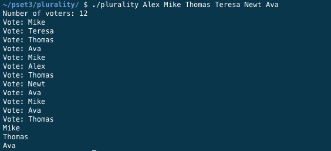

Featured Projects
Memory Tap
This is a web game that tests a player’s memory by producing a random sequence of colours and sounds that the player must imitate to proceed to the next level, with infinite levels. This is modelled after a popular electronic game called Simon. My brother loves playing it so I turned it into a web game! The algorithm utilizes jQuery.
Mathxml
This is a simple educational math app that leverages coreML, the Vision Framework and MNIST machine learning model. It recognizes the user's handwriting based on the touch drawing to check if their math was correct. Currently, it can only check basic math addition questions.
Sketchy
When I get bored of studying, I often take out a notepad and start sketching on it, so I thought it would be cool to create a pocket sketch pad on my phone. Sketchy is a sketching app that provides a user with the ability to adjust brush size, clear the canvas, apply filters, and save the drawing to their photo library.
Lift
Lift is a project that I created two years ago. This is a mechanical elevator that’s connected to an H-Bridge Motor and programmed to change floor based on a user input value. The program is all coded in C. The mechanism uses a pulley system, to relay the user’s input from the computer to produce elevator movement.

EasyElect
This program gets an input of names from user, ranked in order of preference, then produces the winner of the election. It takes into account the rankings, the overlaps of names and produces a result based on a majority vote.
